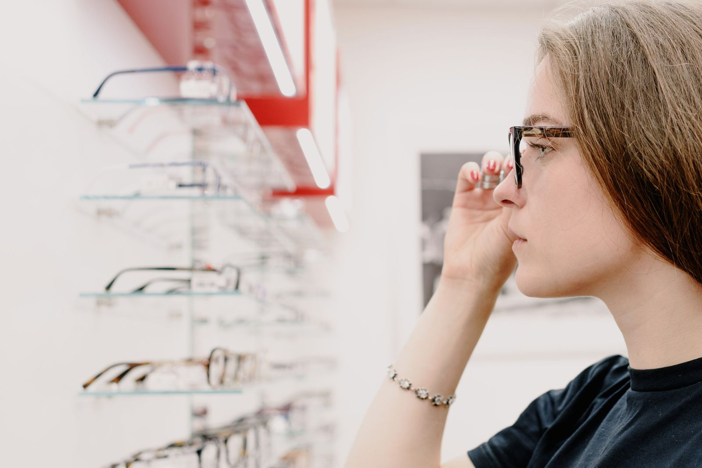

Montures de créateurs
Maisons indépendantes françaises et européennes, séries limitées, acétate et titane.
Des lunettes qui vous ressemblent, choisies avec vous, pas pour vous.
Une heure d'essayage privé, des montures de créateurs que l'on ne voit pas partout, un examen de vue en boutique et des verres ajustés à votre façon de lire, de conduire ou de travailler sur écran.
Sans rendez-vous aussi, selon l'affluence.

Cliquez sur votre situation : le motif de rendez-vous se remplit tout seul.
La boutique
Maisons indépendantes françaises et européennes, séries limitées, acétate et titane.
Contrôle de votre vue en boutique pour ajuster vos verres, dans le cadre prévu par la réglementation.
Mesures précises de votre posture et de vos usages pour une adaptation rapide.
Verres qui soulagent les yeux lors des longues journées devant l'ordinateur.
Toutes nos montures solaires peuvent recevoir votre correction.
Réglage offert à vie sur les lunettes achetées chez nous.
Votre rendez-vous
Un créneau d'une heure, rien que pour vous.
Contrôle de la vue si besoin, échange sur vos usages.
Montures sélectionnées selon votre visage et votre style.
Ajustage final et conseils d'entretien, sous 7 à 10 jours.
Nos clients
Architecte, 46 ans
Étudiant, 22 ans
Retraitée, 70 ans
Nos engagements
Camille Rousseau, opticienne diplômée, fondatrice
« Une heure rien que pour moi, et une monture que je n'avais vue nulle part. On me complimente sans arrêt. »
« Mes précédents progressifs me donnaient le vertige. Ici, adaptation en deux jours. »
Questions fréquentes
Votre question n'est pas là ?
Appelez-nous au 01 99 00 63 19.
Pour être remboursé, oui. Selon votre âge et la date de votre ordonnance, l'opticien peut aussi renouveler vos verres après un examen de vue en boutique.
Oui, avec la plupart des mutuelles. Nous vérifions votre prise en charge avant la commande.
Oui, comme tous les opticiens, nous proposons une sélection de montures et de verres sans reste à charge. Nous vous la présentons à chaque devis.
Généralement de 7 à 10 jours, un peu plus pour certains verres très spécifiques.
Revenez nous voir : nous reprenons les mesures et, si nécessaire, faisons refaire les verres.
C'est conseillé pour l'essayage privé, mais vous pouvez aussi passer sans rendez-vous.
Rendez-vous
Dites-nous ce que vous cherchez. Nous vous rappelons pour fixer un créneau d'une heure.
Du mardi au samedi, 10 h à 19 h
27 rue du Cherche-Midi, 75006 Paris
Où nous trouver Paris 6e, Paris 7e, Paris 14e, Paris 15e, Saint-Germain-des-Prés.